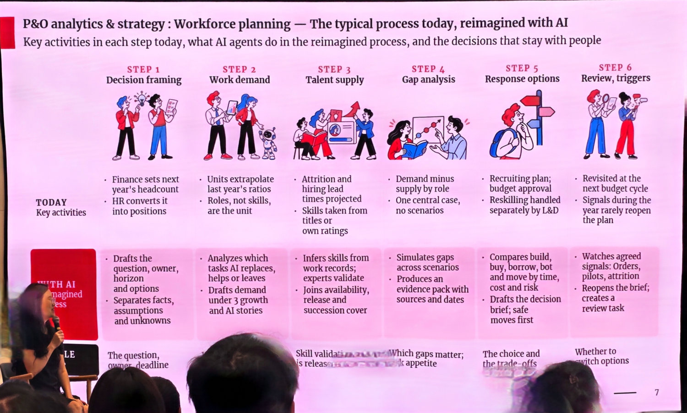
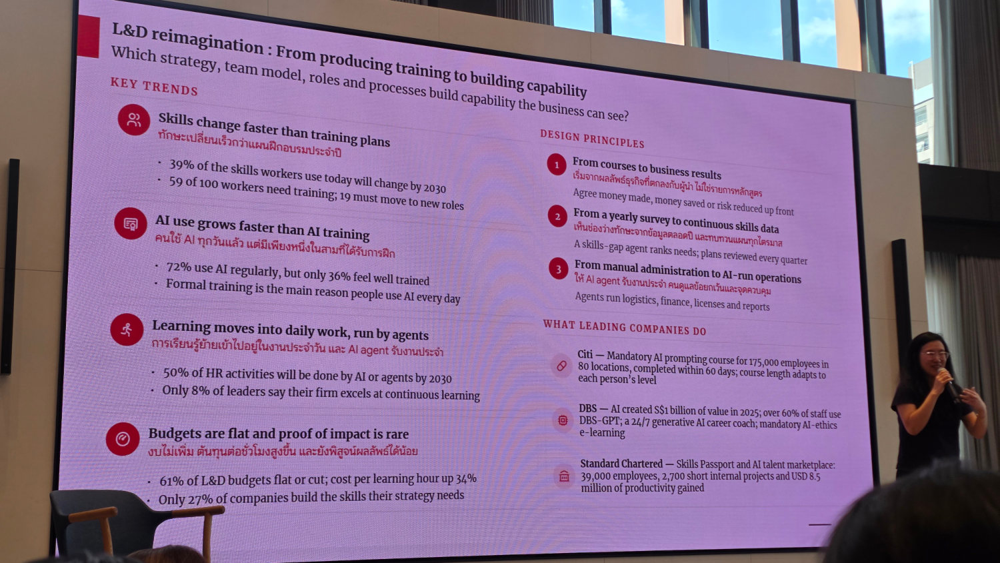
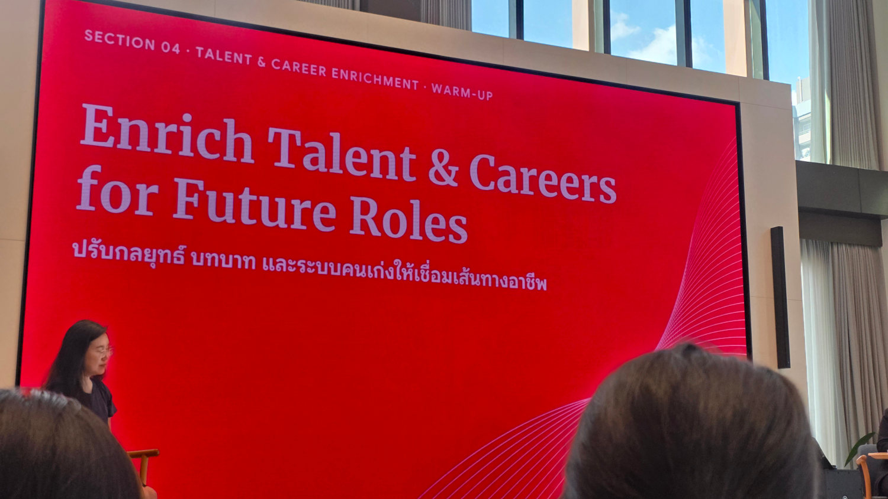
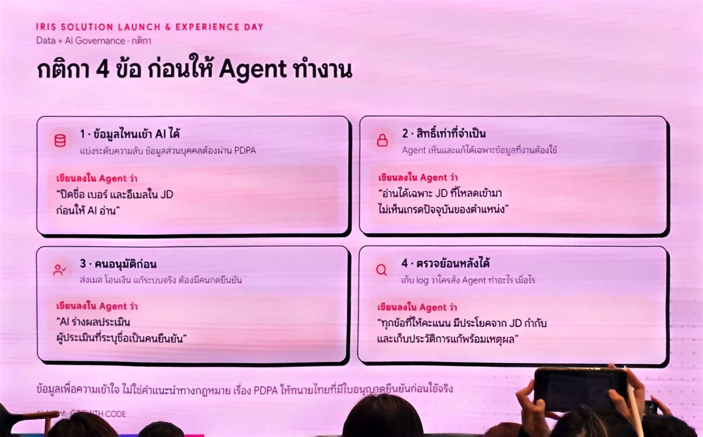
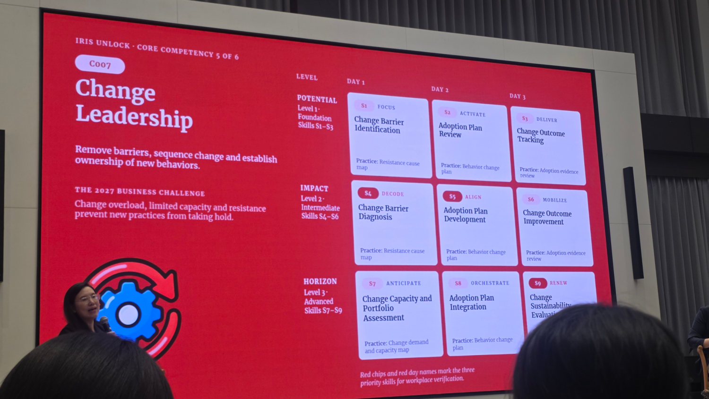

อ่านแล้วจะเห็นวิธีเชื่อมโจทย์กำลังคน ทักษะ เส้นทางอาชีพ และการใช้ AI เข้ากับผลงานที่ตรวจได้ เรื่องทีมขายและแบบฝึกเป็นตัวอย่างที่เรียบเรียงเพื่อการเรียนรู้
ก่อนขอคนเพิ่ม ลองถามว่างานกำลังเปลี่ยนอย่างไร
สมมติทีมขายต้องทำรายงานตลาดให้ทันสัปดาห์เดียวกัน แต่ทีมยังใช้เวลาส่วนใหญ่รวมไฟล์จากหลายพื้นที่ ผู้นำอาจขอคนเพิ่มทันที หรือเริ่มจากแยกว่างานไหนเพิ่มจริง งานไหนติดขั้นตอน และทักษะอะไรที่ยังขาด คำตอบจะเปลี่ยนตามฉากทัศน์ เช่น ยอดงานโต หรือ AI ช่วยรวมข้อมูลได้บางส่วน

ภาพการวางแผนกำลังคนในงานไล่จากตั้งคำถามเรื่องงานและกำลังคน ไปถึงเปรียบเทียบช่องว่าง ทางเลือก และจังหวะทบทวนแผน
เปิดแบบฝึกสำหรับทีม
เขียนฉากทัศน์สองแบบโดยระบุปริมาณงาน ทักษะที่ต้องใช้ และข้อมูลที่ยังขาด แล้วเลือกว่าจะฝึกคน ย้ายบทบาท หรือปรับงานก่อน
เปลี่ยนคำขออบรมเป็นโจทย์ฝึกจากงานจริง
เมื่อเห็นแล้วว่าทีมขายติดที่การเปลี่ยนข้อมูลให้เป็นข้อเสนอ คอร์สเครื่องมืออย่างเดียวอาจยังไม่ตอบโจทย์ ให้เริ่มจากชิ้นงานปลายทาง เช่น สรุปแนวโน้มตลาดที่ผู้จัดการใช้ตัดสินใจได้ แล้วออกแบบการฝึกย้อนจากคุณภาพของชิ้นงานนั้น

สไลด์ L&D Reimagination เสนอให้มองจากการผลิตการอบรมไปสู่การสร้างความสามารถ และพิจารณาว่า AI ช่วยช่วงไหนของงาน L&D ได้
เปิดแบบฝึกสำหรับทีม
เลือกชิ้นงานจริงหนึ่งชิ้น เขียนเกณฑ์ตรวจสามข้อ และนัดหัวหน้าเทียบงานก่อนฝึกกับหลังฝึก 30 วัน
ทำให้คนเห็นว่าจะลองบทบาทถัดไปได้อย่างไร
บางคนในทีมอาจสนใจขยับจากงานขายไปสู่งานวิเคราะห์ตลาด แทนที่จะเริ่มจากรายชื่อผู้มีศักยภาพเพียงอย่างเดียว ให้เขียนว่าคนทำบทบาทใหม่นี้ต้องรับผิดชอบอะไร ทำผลงานแบบไหน และทักษะใดฝึกเพิ่มได้ แล้วให้ลองงานขนาดเล็กก่อน

หัวข้อ Talent & Careers ในงานเชื่อมบทบาทในอนาคตกับเส้นทางอาชีพและการเคลื่อนย้ายภายใน
เปิดแบบฝึกสำหรับทีม
ทำ success profile หนึ่งบทบาทโดยใส่หน้าที่สำคัญ ทักษะจำเป็น และหลักฐานผลงาน แล้วเลือกหนึ่งงานให้ผู้สนใจลองทำ
ให้ AI ช่วยงานที่กำหนดขอบเขตได้
เมื่อทีมเริ่มใช้ AI ร่างรายงาน ควรกำหนดว่าผู้ช่วยอ่านข้อมูลอะไรได้ งานจบเป็นอะไร และใครยืนยันผล เช่น ให้ร่างสรุปจากไฟล์ที่อนุญาตและให้เจ้าของข้อมูลตรวจข้อสรุปก่อนนำไปใช้

สไลด์กติกาก่อนให้ agent ทำงานเน้นข้อมูลที่อนุญาต สิทธิ์เท่าที่จำเป็น คนอนุมัติ และการตรวจย้อนหลัง
เปิดแบบฝึกสำหรับทีม
เขียนกติกาหนึ่งหน้าให้ผู้ช่วยร่างสรุป โดยระบุข้อมูลที่ใช้ได้ ผลลัพธ์ที่ต้องส่ง ผู้ตรวจ และวิธีบันทึกการแก้ไข
นิยามสมรรถนะผู้นำให้เห็นจากการตัดสินใจ
การเปลี่ยนงานทีมขายจะเดินต่อได้เมื่อหัวหน้าปรับงานตามหลักฐาน รับฟังคนที่ลงมือ และรับผิดชอบการตัดสินใจจากข้อมูลที่ AI ช่วยรวบรวม คำอย่าง AI Leadership หรือ Change Leadership จึงควรแปลงเป็นพฤติกรรมที่คนในทีมมองเห็นได้

ชุด IRIS Unlock แสดงตัวอย่างสมรรถนะและทักษะย่อยหลายระดับ ภาพประกอบนี้เป็นหัวข้อ Change Leadership
เปิดแบบฝึกสำหรับทีม
เลือกหนึ่งพฤติกรรมของหัวหน้า เช่น ทบทวนข้อผิดพลาดของรายงานร่วมกับทีมทุกสัปดาห์ แล้วกำหนดหลักฐานที่จะใช้ดูว่าเกิดขึ้นจริง
ปิดวงด้วยผลงานที่กลับมาตรวจได้
บทเรียนสั้นใช้เตรียมตัวก่อนลงมือ ส่วนงานจริงกับ feedback ทำให้ทีมเห็นว่าทักษะถูกใช้แล้วหรือยัง เมื่อครบ 30 วันให้ดูทั้งคุณภาพชิ้นงาน เวลาที่ใช้ และสิ่งที่ยังต้องแก้ ก่อนชวนทีมอื่นใช้ต่อ
ภาพสาธิตจากงานมีตัวอย่าง micro-learning, project charter, ความคืบหน้าทักษะ และเส้นทางเรียนรู้ ตัวอย่างเหล่านี้ใช้เป็นแนวคิดประกอบการออกแบบ
เปิดแบบฝึกสำหรับทีม
วางแผน 30 วันตั้งแต่เลือกงานจริง ฝึก ทดลองใช้ รับ feedback จนถึงทบทวนผลงานกับหัวหน้า ระบุว่าจะขยายหรือปรับแผนจากหลักฐานอะไร
ลองออกแบบแผน 30 วัน
เลือกโจทย์เดียวในทีม ระบุผลงานที่อยากเห็น การฝึกในงานจริง จุดที่ AI ช่วยได้ ผู้ตรวจ และวันกลับมาดูผล จากนั้นส่งลิงก์ตอนที่เกี่ยวข้องให้เพื่อนร่วมทีมชวนกันลอง
ที่มาของบทเรียน
เรียบเรียงจากภาพสไลด์ที่ได้รับจากงาน IRIS HR D-DAY ภาพใช้ประกอบใจความที่มองเห็นได้ การถอดเสียงและการจับคู่เวลารายสไลด์ยังอยู่ระหว่างตรวจ จึงไม่มีคำอ้างตรงจากวิทยากรในบทนี้
กลับไปเลือกเรื่องอ่าน